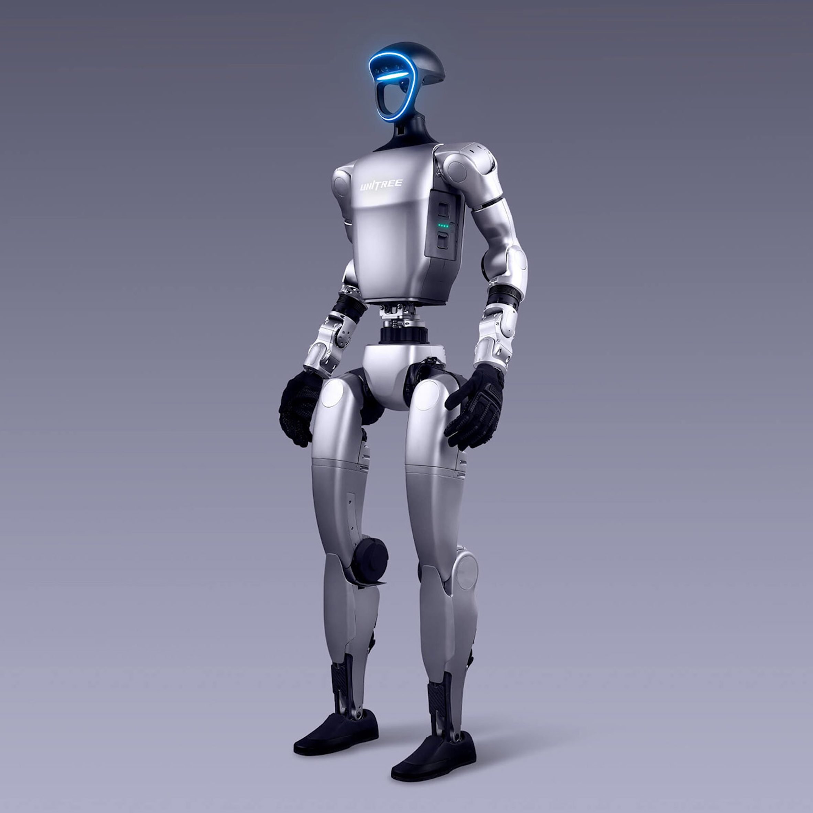

Dynamic Mobility Lab (Dynamo)
Bipedal Locomotion & GRF Integration
July 2025 – Present
Training locomotion policies for the Unitree G1 humanoid using ground reaction force (GRF) data to improve dynamic feasibility and robustness.
